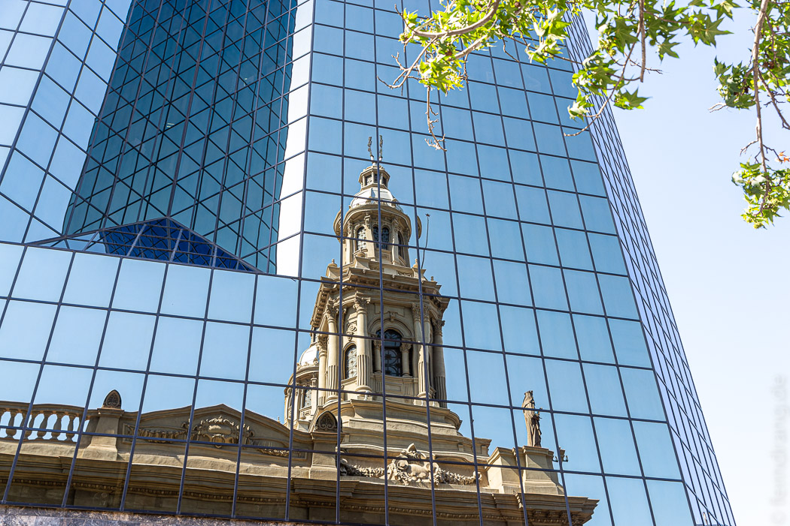
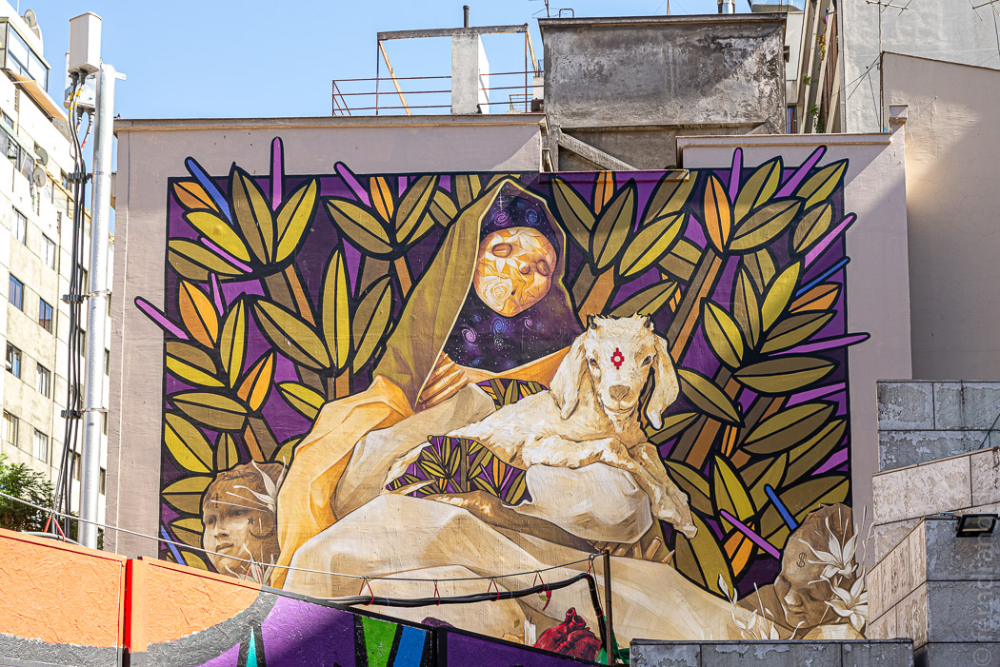
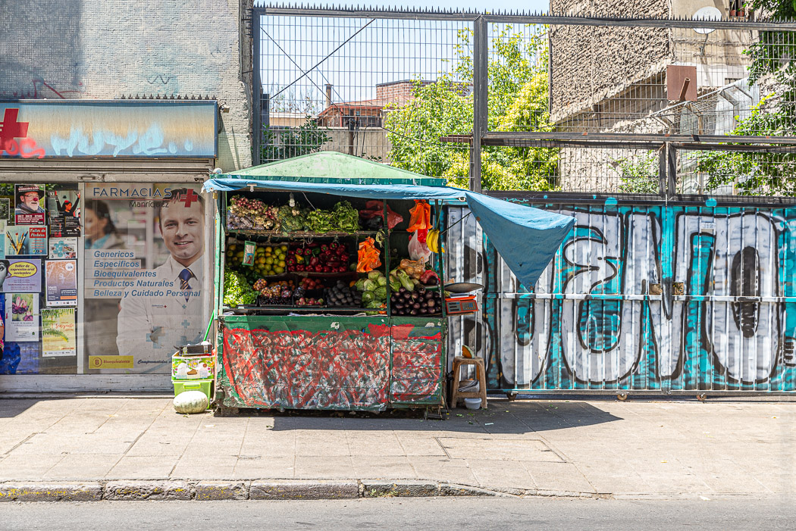
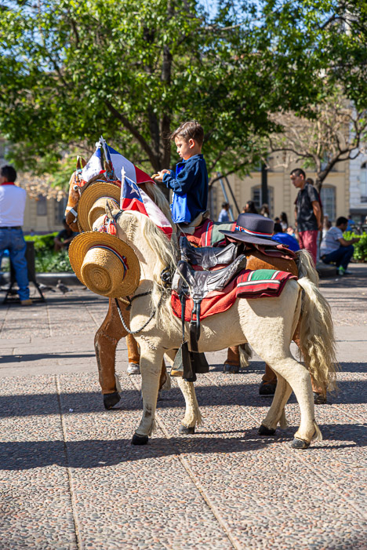
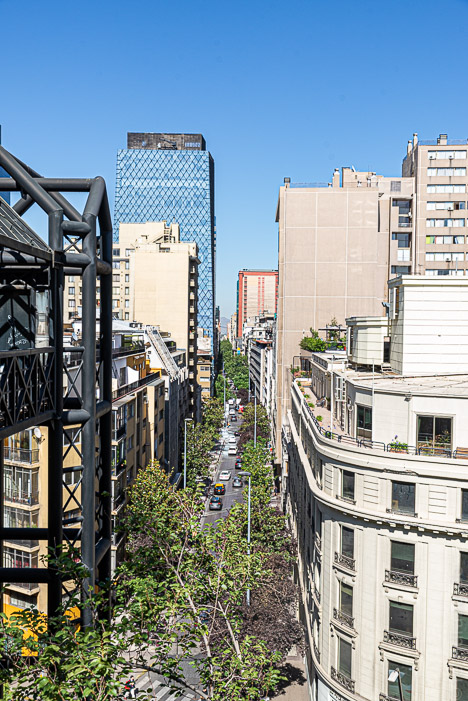

16/12/2018
Santiago
Wenn man über die prächtigen Anden fliegt, deren höchste Gipfel eher neben als unter dem Flugzeug zu liegen scheinen, und dahinter eine geradezu leere Landschaft auftaucht, glaubt man nicht, dass noch etwas kommen könnte. Doch dann liegt da plötzlich eine endlose Millionenstadt in der staubigen Einöde wie ein Teppich aus Hochhäusern.
Unser kleines Hotel war in einem schönen, alten Haus in einer ruhigen Sackgasse untergebracht. Direkt um die Ecke liegt das nette Viertel „Barrio Lasterria“. Dort reihen sich Cafés und Eisdielen aneinander, die die wildesten Torten anbieten. Zwischen Graffiti-Kunstwerken und prächtigen, alten Häusern gibt es unzählige Straßenstände, an denen vor allem junge Leute ihr Einkommen mit T-Shirts, Sandwiches, Massagen, Obst oder anderem Kleinkram aufbessern. Trotz der vielen Menschen auf der Straße geht man es hier ruhig an. Im Café eine Zeitung lesen, mit dem Hund rausgehen, ein wenig in den kleinen Lädchen stöbern. Doch alle zwei Stunden muss sich der gediegene Chilene der schwierigen Entscheidung stellen, ob der nächste Snack gefroren oder frittiert sein soll.
 Nach Osten liegt eine Plaza de Armas, wie man sie überall in Südamerika findet. Ein großes weihnachtsbaumähnliches Gebilde sorgte für festliche Stimmung. Ansonsten drückten sich die Jungen und Alten - am liebsten mit der Liebsten - im Schatten der Palmen auf die Bänke, um der Sonne zu entgehen. Doch die Hitze von über 30° war gut erträglich, weil die Luft so trocken war. Von der Plaza gehen einige heruntergekommene Einkaufsstraßen ab. Dort sind ärmere Leute unterwegs, die sich weniger um den nächsten Cappuccino als um das Gemüse fürs Abendessen sorgen.
  